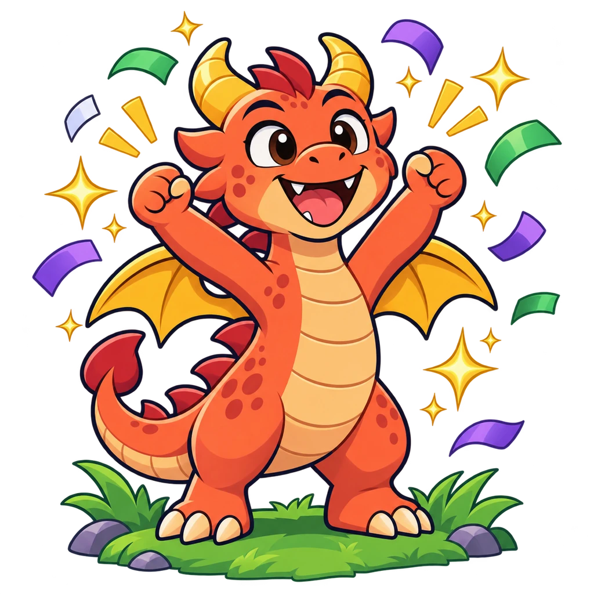

Pick a world, then spin. Tap a single wheel to re-spin just that part. Keep spinning until you get a story you can't wait to write.
Want a whole idea at once? Draw a card. Every card is a full prompt, and many come from popular kid writing lists, retold for Asher's worlds.

Every finished mission adds a badge. Bosses give the big shiny ones.
Progress saves on this device and browser only.